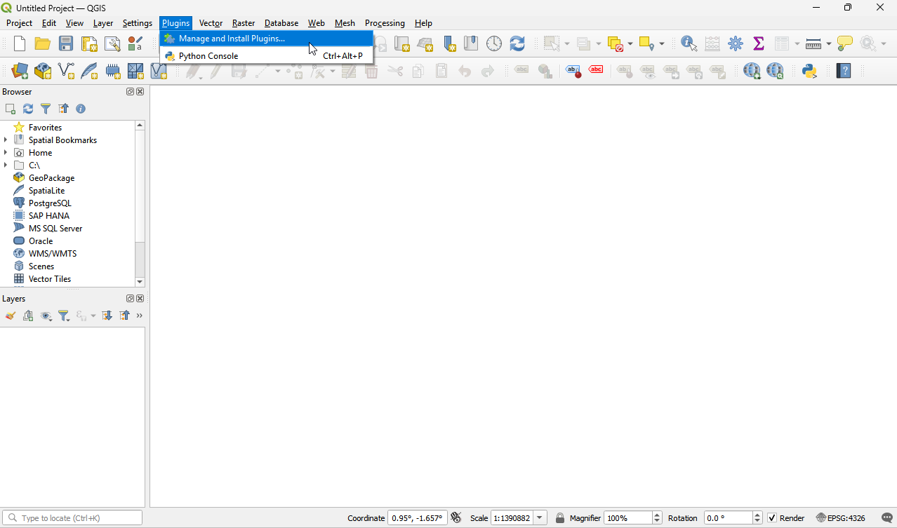
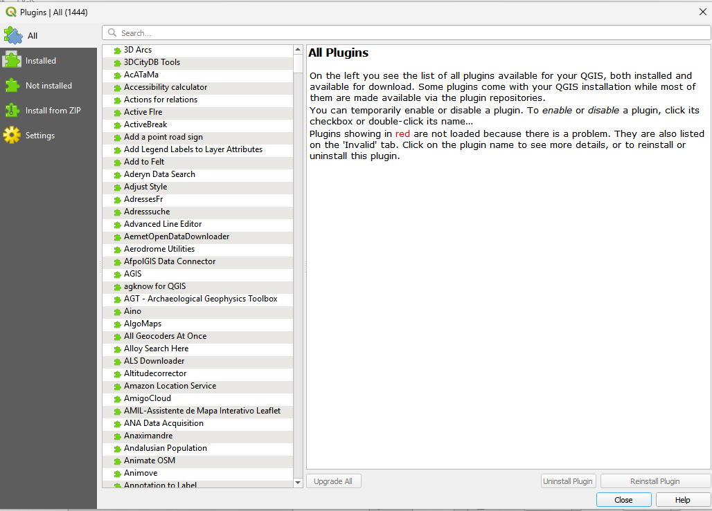
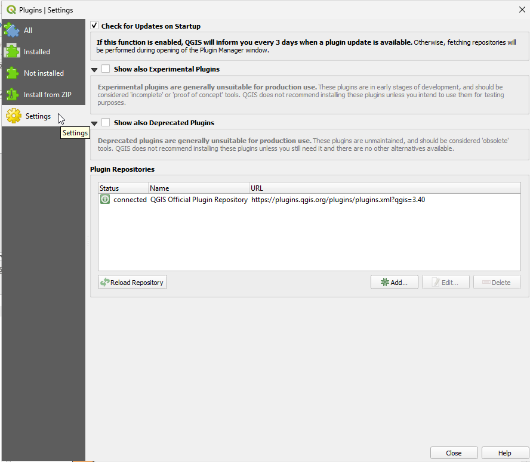
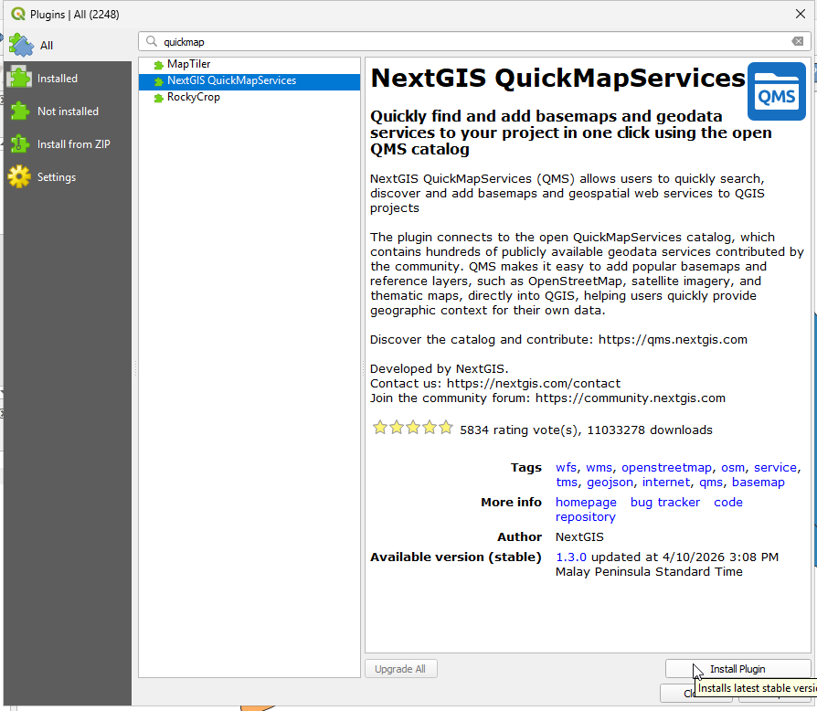
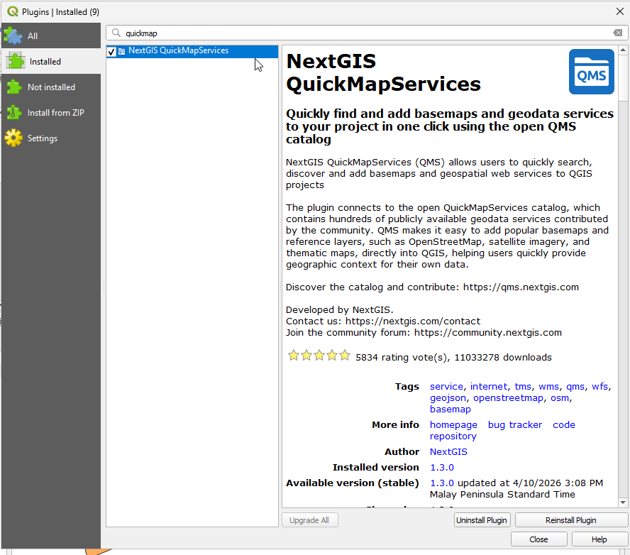

6. QGIS Plugins
QGIS was designed with a flexible and extensible plug-in architecture. This allows new features/functions to be easily developed and added to the application. Many of the features in QGIS are implemented as plug-ins. Many QGIS users are developing their own plug-ins and there is a wealth of plug-ins available in the QGIS website.
Core Plug-ins are maintained by the QGIS Development Team and are automatically part of every QGIS distribution.
External Plug-ins are currently all written in Python. They are stored in external repositories and maintained by the individual authors.
Note
You need a working Internet connection to download and update plugins.
6.1. Add new plugins using Python Plugin Installer
In order to download and install an external Python plugin, click the menu Plugins –> Manage and Install Plugins.
{kind=link}
{kind=link}

{kind=link}

Click the Settings tab.
{kind=link}

Settings Tab - contains a list of plugin repositories available. By default, only the QGIS Official Repository is enabled. You can add several user-contributed repositories, including the central QGIS Contributed Repository and other external repositories by ticking Show also experimental plugins and Show also deprecated plugins.
Click the Show also experimental plugins button to download the list of all available plugins.
Go back to the list of plugins by clicking the All tab.
Plugins tab - this tab list all available plugins. Each plugin can be either:
Not installed - the plugin is available in the repository,but is not installed yet.
Installed - the plugin is already installed. If it is also available in any repository the Reinstall plugin button will be enabled.
At the Not installed tab, find and select the QuickMapServices in the list. Click Install plugin button.
{kind=link}

6. Do this for the following plugins as well:
Street View
Value Tool
Once installed, close the Plugins window.
6.2. Loading the Plugins
The Plugin Manager lists all the available plug-ins and status (loaded or unloaded), including all core plug-ins and all external plug-ins that have been installed and automatically activated using the Python Plugin Installer. Plug-ins that are already loaded have a check mark to the left of the name.
Activate/enable the plugins by clicking its check box or description.
{kind=link}

You maybe prompted to restart QGIS, close then open QGIS.
Warning
In some cases, 3rd party plug-ins (external plug-ins developed by other users) can be unstable and can cause your QGIS instance to crash. These plug-ins were designed for specific usage of the authors and may not work as expected in your own system. Use experimental plug-ins at your own risk!
6.2.1. Additional Youtube Video
Click this link for the offline version.